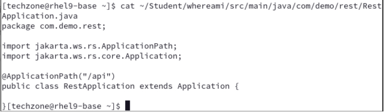

Liberty Dev Mode
Hands-on demo guide
1 Introduction
In this demo, you will show how developers can use Open Liberty in dev mode for achieving an efficient iterative develop, test, and debug cycle when developing Java based applications / microservices. Liberty dev mode works with WebSphere Liberty.
At the end of this demo, you should be able to showcase how to: * use Liberty dev mode with an Integrated Development Environment (IDE) * use Liberty Code Assistant to change configurations of a Liberty server * use Liberty Code Assistant to update Java application code * run integrated unit tests from Liberty dev mode
Open Liberty is an application server designed for the cloud. It’s small, lightweight, and designed with modern cloud-native application development in mind.
Open Liberty supports the full MicroProfile and Jakarta EE APIs and is composable, meaning that you can use only the features that you need, keeping the server lightweight, which is great for microservices. It also deploys to every major cloud platform, including Docker, Kubernetes, and Cloud Foundry.
Maven is an automation build tool that provides an efficient way to develop Java applications.
Liberty development mode, or dev mode, allows developers to develop applications with any text editor or IDE by providing hot reload and deployment, on-demand testing, and debugger support. Liberty dev mode is enabled through Maven and Gradle projects.
With Liberty dev mode, the application code is automatically compiled and deployed to the running server, making it easy to iterate on the code changes.
Developers can run tests on-demand or even automatically so that you can get immediate feedback on their changes. They can also attach a debugger at any time to debug their running application.
Visual Studio Code (VS Code) is a code editor redefined and optimized for building and debugging modern web and cloud applications. VS Code is the IDE used in this Demo environment.
This demo has the following steps: 1. Create a Liberty web application 2. Update the Liberty web application 3. Run Liberty dev mode using integrated development environment 4. Update Liberty server configuration with Liberty Code Assistant 5. Modify application code with Liberty Code Assistant 6. Conduct a unit test in Liberty dev mode 7. Summary
2 1. Create a Liberty web application
Talking Points
The objective of this step is to develop a simple web application for Liberty. I will use a Liberty starter application to start from scratch and use VS Code and Liberty Tools to build the application. I will create a Jakarta EE 10 Web application with the name whereamI and will use maven to build it.
The fastest way to get started with Liberty is to use an Open Liberty starter application which generates a project with the maven configuration as well as a basic Liberty setup.
The Open Liberty starter gives us a simple, quick way to get the necessary files to start building an application on Open Liberty. There is no need to search how to find out what to add to my maven or gradle build files. A simple RestApplication.java file is generated for us to start creating a REST-based application. A server.xml configuration file is provided with the necessary features for the MicroProfile and Jakarta EE versions that I selected.
-
Open a browser window by clicking on Activities (A) and then select the Firefox browser (B) icon.
-
Enter the URL https://openliberty.io/start/. The Open Liberty Starter page is displayed.
-
Change the artifact name to whereami (A), change the Java level to 17 (B) and leave the rest as is, then click Generate project (C).
-
Click on Save (A) to save the project under the Downloads directory of the demo VM.
You will see a pop-up like the one below. Click Got it! (A) to close the window.
-
Click Activities (A) and switch to the terminal window (B).
-
From the terminal window, extract the project zip file to the working directory with the following commands.
mkdir ~/Student unzip ~/Downloads/whereami.zip -d ~/Student/whereamiThe project is extracted to the ~/Student/whereami directory.
-
Inspect the whereami project artifacts and sour code files created by Open Liberty Starter Application using the command:
ls -l ~/Student/whereamiThe whereami project artifacts and sour code files are listed.
As you can see, the Open Liberty Starter Application creates the project structure and basic artifacts needed for the project. If you want to do development in docker or containers, it has the Dockerfile ready. It also contains the pom file because you selected a maven project in the Starter Application.
-
View the contents of the pom.xml file with the command:
cat ~/Student/whereami/pom.xml
You see that the pom file has the basic structure of a Java application configuration with maven and it is using MicroProfile and open liberty tools as the starter which allows you to build the application.
-
View the contents of the Liberty server.xml file with the command:
cat ~/Student/whereami/src/main/liberty/config/server.xmlIn the application source what you are seeing is that it is a very simple configuration for the liberty server which is basically pulling in the Jakarta E10 and the MicroProfile 6 features that you defined in that starter kit.
Ideally you would list up a fewer of the sub features instead of those convenience features but that's a good way to get started.
-
View the contents of the RestApplication.java file with the command:
cat ~/Student/whereami/src/main/java/com/demo/rest/RestApplication.java
As you can see that the Starter Application creates the starter set for a rest application that you can start developing with. The next step is to add application functions and business logic to the project.
3 Update the whereami application
Talking Points
In this step, I am going add application functions and business logic to the whereami application. To save time, I am going using the pre-built application code I get from my GitHub repo. The pre-built application code includes the following:
1. there are some minor changes to the Liberty server.xml file.
2. a servlet class for whereami application, WhereAmI.java, has been created.
3. a class for the unit test is added.
-
Replace the whereami application code in the Student directory with the pre-built code from the GitHub repo with command:
cp -rf /home/techzone/Liberty-getting-started-lab-files/demoFiles/whereami/ ~/Student/ -
Inspect the updated whereami project artifacts and sour code files using commands:
ls -l ~/Student/whereamiThe updated whereami project artifacts and sour code files are listed.
-
Check and test whereami application in VS Code with commands:
cd ~/Student/whereami code .The VS Code UI is opened.
-
Click Yes, I trust the authors ** (A**) to continue.
If you see during the lab one of the pop-ups below or any other pop-up asking to install something, close the pop-up without installation by clicking the X (A).
When the project is loaded, you can see that you added the WhereAmI.java file as well as a unit test in the project.
You also configured the Liberty server with all features needed for the application.
4 Start Liberty Dev Mod
Talking Points
Liberty development mode, or dev mode, allows us to develop applications with any text editor or IDE by providing hot reload and deployment, on demand testing, and debugger support. Liberty Dev Mode is enabled through Maven and Gradle projects.
My code is automatically compiled and deployed to my running server, making it easy to iterate on my changes.
I can run tests on demand or even automatically so that I can get immediate feedback on my changes. I can also attach a debugger at any time to debug my running application.
I can use the capabilities of Liberty dev mode inside and outside of an IDE. This provides with me the flexibility of choice. In a terminal window, I could use Liberty in dev mode with maven using the command mvn liberty:dev or mvn liberty:devc if I want to develop in a container.
In the demo environment, the Liberty tools plugin has been installed into VS Code. Therefore I will use the integrated Liberty dashboard instead.
I will show how to run Liberty dev mode in VS Code and how to use the Open Liberty Tools in VS Code to work with my server configuration, application code and run integrated unit tests on demand, so that I can get immediate feedback on my changes.
In the VS Code environment, I will right-click project under LIBERTY DASHBOARD and select start. This will start Liberty in dev mode and we will see the following message in the VS Code terminal window: Web application available (default_host): http://localhost:9080/wherami/. I can now access the application URL in the browser window to verify that the application is running.
-
To start Liberty in Dev Mode right-click whereami (A)under LIBERTY DASHBOARD and select Start (B).
In a few seconds, the Liberty server will be up and running, and you can see that the whereami application is ready.
-
To access the whereami application, open a web browser and enter the application URL as: http://localhost:9080/whereami/.
The application page is displayed.
It lists the information about Liberty version used, the host name, scheme, context path and port.
5 Update Liberty server configuration with Liberty Code Assistant
Talking Points
Now I am going to make changes to the Liberty server configuration and enable the server https port and I am going to use Liberty code assistant to speed up the server configuration process.
In order to active the https port of the Liberty server, I need to add the transport security feature to the Liberty server and I can do it with Liberty code assistant.
I will demonstrate that I can update Liberty server configuration using Liberty code assistant and activate the https protocol without stopping or restarting the Liberty server.
-
In the VS Code environment, click to open the Liberty server configuration file server.xml (A) under the target/liberty/wlp/usr/server/defaultServer folder.
You can see that the https port is set as 9443.
-
If you try to access the application from the browser window using the https port as: https://localhost:9443/whereami/ (A), you will get the Unable to connect error because although the https port value is defined, the https port is not activated on the Liberty server yet.
-
Back to VS Code, add a new line after
servlet-6.0 (A) in the server.xml file, and activate the Liberty code assistant by pressing CTRL+SPACE, the code assistance window is shown. -
Select feature (A) from the code assistant window to add a new feature element.
This will add a new feature element to the file.
-
Type tr (A) in the feature field, the code assistant will offer the feature names containing the word tr. Select the transportSecurity-1.0 (B) to add the feature.
As you can see that in Liberty Dev Mod, once the new feature is added, the server configuration is dynamically updated. Liberty code assistant automatically detects that the transportSecurity-1.0 feature requires the ssl-1.0 feature, so it adds the ssl-1.0 feature to the Liberty server configuration as well.
-
Now the https port is activated, if you try again to access the application from the browser window using the https port as: https://localhost:9443/whereami/ and accept the warning messages, you will get the application page.

You can see now the protocol scheme is https and the port is 9443 which means that the https protocol is activated.
This demonstrates that using Liberty code assistance you can modify Liberty server configuration without restart the server.
6 Modify application code with Liberty Code Assistant
Talking Points
In the previous section, I shown how to use Liberty code assistance to update the Liberty server configuration.
Now I am going to use Liberty code assistant to make quick modifications to the application code. I will make code modifications to change the color of the text showing on the application page for different network protocols. I will have the red color for http protocol and the green color for https protocol. I will show how easy it is to make change the application code with the help of Liberty Code Assistant in Liberty Dev Mod.
-
In the VS Code environment, click to open the servlet java file WhereAmI.java (A) under src/main/java/com/demo.
-
Scroll down to line 45 (A) and create a new line (B) in the file.
-
Type i (A) and use Liberty code assistant (CTRL+SPACE) to select the if statement (B).
-
Highlight condtion:var(boolean) (A), press CTRL+SPACE and select httpScheme (B).
-
Type == "http" (A) next to httpScheme.

-
Move to the next line (A), press CTRL+SPACE, and select zone (B).
-
Type = "red"; (A) next to the zone.
-
Repeat the same process to add another if statement like this:
if (httpScheme == "https") { zone = "green"; }You should see the application code you added as:
-
To verify the code changes, you can access the application page in the browser window with both http and https ports, and you can see the changes you made to the application.
As you can see that when you made changes to your code, the changes were automatically saved and Liberty server adopted these new changes dynamically without re-starting. So as a developer, you can quick change, test and verify my application code.
7 Conduct a unit test in Liberty dev mode
Talking Points
With Liberty Dev Mod, it is easy to conduct a unit test in the IDE. Within the IDE, I can run the unit test and integration test by right-clicking project under LIBERTY DEV DASHBOARD and select run test. This will active the test run and show the test results in the VS Code terminal window. Another way to activate the unit test is to press the Enter key in the VS Code terminal window.
In this section I will show how to do a unit test. The test is designed to check if the title of the application is in capital letters or not. It will be successful if the title of the application is in capital letters, otherwise it will fail.
By default, the title of the application is not in all capital letters, so my unit test will fail and provide information about where the issue is and how to fix it. Based on the information, I will fix the error and run the test again, the unit test will be a success after the code fixing. I will demonstrate how the Liberty Code Assistant and Liberty Dev Mod can help speed up the unit test process.
As you know from the previous section, the title of the application, Where Am I Running?, is not all in capital letters as shown below:
So your unite test will not going to be successful as expected.
-
From the VS Code environment, go to the terminal window and press Enter (A).
This will activate the unit test and integration test. You will see that the tests will fail with the message: FAIL! ---> The header is in ‘lower case’!.
-
To fix the error, you need to update your code. Go back to WhereAmI.java file in VS Code, scroll down (A) and go to the line 64 (B).
-
Type w (A) in the new line and use Liberty code assistant (CTRL+SPACE) to select whereami (B).
-
Type = (A) after whereami, press CTRL+SPACE and select whereami (B).
-
Type .u (A) after wherami and select toUpperCase() (B).
-
Type ; (A) in the end and the code change will look like this:

-
Now go back to run your unite test again from the VS Code terminal window by pressing Enter (A).
You will see that the unit test and integration test are successful with the message: PASS ! ---> The head has been converted to UPPER CASE!.
-
You can verify it in the whereami application at http://localhost:9080/whereami/.
You can see that the change is made to the application title.
8 Summary
In this demo, you learned how developers can use Liberty in dev mode for achieving efficient iterative develop, test, debug cycle when developing Java based applications / microservices. As you explored the fast and efficient inner-loop development experience using the Liberty dev mode and VS Code IDE, your code was automatically compiled and deployed to the running server, making it easy to iterate on your changes.